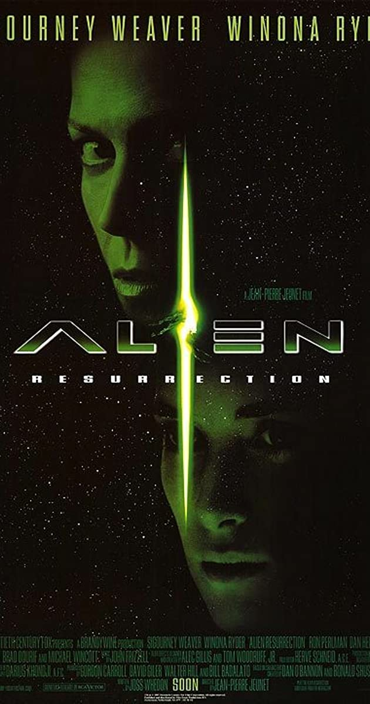

Obcy 1
Rok 2122. Frachtowiec kosmiczny USCSS Nostromo wraca na Ziemię z Thedus wraz z rafinerią do przetwarzania wzbogaconej rudy (20 mln ton rudy). Steruje nim komputer pokładowy o nazwie Matka (MU-TH-UR), a załoga pozostaje w stanie hibernacji. Spokój podróży zakłóca tajemniczy sygnał wysyłany z księżyca planety w układzie Zeta 2 Reticuli. Nieznany sygnał błędnie rozpoznany jako SOS, a będący w rzeczywistości ostrzeżeniem został odebrany przez Matkę, która budzi załogę z anabiozy.
Ludzie lądują Nostromo na (często mylonym z planetą) księżycu Acheron (LV-426), pozostawiając na orbicie rafinerię, w trakcie lądowania statek doznaje kilku uszkodzeń, spowodowanych zassaniem pyłu z atmosfery. Podczas gdy mechanicy Brett i Parker naprawiają uszkodzenia, do zbadania tajemniczego sygnału zostaje wysłana trzyosobowa ekipa zwiadowcza (Dallas, Lambert i Kane). Znajduje ona stary wrak statku kosmicznego nieznanej cywilizacji. W jego wnętrzu odkrywają szkielet członka obcej załogi, a także olbrzymią ładownię wypełnioną setkami skórzastych jaj.
Kane, który odkrył jaja, zostaje zaatakowany przez pająkowatą formę życia (larwę zwaną facehuggerem, czyli twarzołapem). Z przyczepionym do twarzy organizmem zostaje przetransportowany na prom, gdzie reszta załogi stara się uwolnić Kane’a od intruza. Badania wykazują, że tajemniczy organizm podtrzymuje Kane’a przy życiu i nie sposób go ściągnąć bez szkody dla zainfekowanego oficera. Pozostawiają go więc w takim stanie, zastanawiając się nad dalszymi krokami. Po pewnym czasie organizm odpada i umiera.
Po tym wypadku Kane wraca do zdrowia i zaczyna normalnie funkcjonować. Jednak podczas ostatniego posiłku przed hibernacją z klatki piersiowej mężczyzny wydostaje się wężowata postać, powodując śmierć żywiciela. Ten moment stanie się punktem zwrotnym – młody obcy przeobraża się z poczwarki w przerażającego potwora, który zabija kolejnych członków załogi.
Trzecią ofiarą obcego pada kapitan statku, Dallas. Wkrótce potem okazuje się, że jeden z członków załogi – oficer naukowy Ash jest androidem. Od niego bohaterowie dowiadują się straszliwej prawdy że zostali celowo skierowani przez korporację Weyland-Yutani w celu sprowadzenia za wszelką cenę obcej formy życia. Nawet życie załogi miało być drugorzędne.
W końcu przy życiu pozostają jedynie kot Jonesy i I oficer Ripley, której udaje się zdetonować statek kosmiczny i uciec w kapsule ratunkowej. Jednakże przed Ripley na pokład kapsuły ratunkowej przedostaje się także obcy. Dochodzi do ostatecznego pojedynku Ripley i obcego, podczas którego Ripley wyrzuca Obcego przez śluzę w przestrzeń kosmiczną.
Obcy 2 Decydujące Starcie
Po pięćdziesięciu siedmiu latach dryfowania w przestrzeni kosmicznej, kapsuła ratunkowa Ellen Ripley zostaje odnaleziona i dostarczona do stacji orbitalnej Gateway, należącej do Korporacji Weyland-Yutani. Podczas przesłuchania w sprawie zniszczenia statku i ładunku, nikt nie wierzy w opowieść o tym, co kobieta przeżyła na holowniku Nostromo i zostają jej odebrane uprawnienia oficera. Okazuje się, że księżyc, na którym znaleziono obcą formę życia, jest w tej chwili zamieszkany przez kilkadziesiąt rodzin kolonizatorów, którzy swoją osadę nazywają Hadley Hope. Jednak gdy z księżycem urywa się komunikacja, słowa Ripley nabierają głębszego sensu, a na księżyc LV-426 wraz z Ripley i przedstawicielem Korporacji – Carterem Burke’em wyrusza z misją ratunkową dobrze uzbrojony oddział Kolonialnej Piechoty Morskiej, dowodzony przez porucznika Gormana.
W opustoszałej bazie kolonistów, grupa komandosów odnajduje dziewczynkę o imieniu Newt, która szybko zaprzyjaźnia się z Ripley. W laboratorium znajdują również dwa facehuggery, utrzymywane przy życiu, umieszczone w pojemnikach zastojowych. Po poszukiwaniach pozostałych żyjących kolonizatorów Marines odkrywają, że wszystkie rodziny znajdują się w jednym kompleksie. Porucznik Gorman wysyła tam wszystkich Marines dowodzonych przez sierżanta Apone. W podziemiach kompleksu okazuje się, że żołnierze nie mogą używać amunicji do karabinów pulsacyjnych i elpeemów (logiczny pistolet maszynowy), gdyż grozi to uszkodzeniem chłodzenia reaktora i w rezultacie wybuchem termojądrowym. Na miejscu znajdują ciała wszystkich kolonistów zawinięte w kokony Obcych, którzy po chwili wydostają się z zakamarków i wybijają prawie cały oddział. Ci, którym udaje się przeżyć, wraz z Ripley powracają do wozu pancernego. Najwyższy stopniem ocalały żołnierz – kapral Hicks, za namową Ripley decyduje się na zniszczenie całego kompleksu przez zbombardowanie go z orbity pociskiem nuklearnym. Prom zrzutowy mający zabrać ich z księżyca na Sulaco rozbija się (Spunkmayer i Ferro pilotujący prom giną z rąk Obcego), przez co grupa musi powrócić do kompleksu.
Ripley i żołnierze barykadują się w jednej z jego części i obmyślają skuteczny plan ujścia z życiem. Do ochrony wykorzystują m.in. cztery automatyczne roboty obronne (występują jedynie w wersji reżyserskiej filmu). Gdy Burke słyszy, że Ripley chce zniszczyć cały kompleks i wszystkich Obcych, nie pozostawiając nawet próbek, które ten zamierza wziąć ze sobą, uwalnia z pojemników zastojowych do pokoju gdzie śpią Newt i Ripley, dwa twarzołapy, aby kobiety nie opowiedziały o chęci nielegalnego zabrania próbek Obcego pozostałym członkom oddziału. W ostatniej chwili Marines ratują Ripley i Newt przed twarzołapami i dowiadują się o spisku Burke’a. Tymczasem android Bishop przekazuje wszystkim, że strzelanina uszkodziła system chłodzący w jednym z reaktorów atmosferycznych, pod którym żołnierze znaleźli kolonistów, co spowoduje wybuch termonuklearny i zniszczenie całego kompleksu. Bishop sprowadza zdalnie rezerwowy wahadłowiec z USS Sulaco na teren kompleksu.
Obcy przedostają się jednak do zablokowanych przez marines przejść i zabijają kilku z nich, w tym Hudsona. Burke wykorzystuje zamieszanie i próbuje ratować się na własną rękę uciekając do innego pomieszczenia. Po zablokowaniu drzwi zostaje zaatakowany przez Obcego. Vasquez z powodu braku amunicji zmuszona jest porzucić swój karabin i odeprzeć atak trzech Obcych pistoletem. W bliskim kontakcie z krwią jednego ze stworzeń odnosi poważne rany. Gorman honorowo wraca by ją ratować. Zostają okrążeni i decydują wysadzić się w powietrze granatem wstrząsowym. Newt wyprowadza ocalałych (Hicksa i Ripley) z jednego kompleksu do drugiego, lecz sama wpada do pomieszczenia chłodzącego w wyniku wstrząsu po detonacji. Hicks wraz z Ripley próbują uwolnić dziewczynkę, lecz zostaje ona porwana przez Obcego do głównego gniazda. Nie wierząc w śmierć Newt, zrozpaczona Ripley zostawia rannego Hicksa pod opieką Bishopa i podąża sygnałem jej nadajnika. Odnajduje Newt oraz Burke’a, który ma już w sobie zarodek Obcego. Ripley zostawia mu granat. W drodze powrotnej do wahadłowca Ripley i Newt trafiają na ogromne skupisko jaj i wysiadującą je Królową Obcych. Bohaterka niszczy wszystkie jaja i zabija dwóch Obcych-strażników broniących królowej. Następnie razem z Newt wydostają się windą na powierzchnię i odlatują wahadłowcem na statek-matkę (USS Sulaco). W tym samym momencie ogromny wybuch nuklearny niszczy wszystkich Obcych i budynki będące na LV-426.
Na statku-matce, jedyni ocaleni – Ripley, Newt, Hicks i Bishop – przygotowują się do powrotu na Ziemię. Podczas gdy Hicks jest nieprzytomny i oczekuje na umieszczenie go w komorze kriogenicznej, z wahadłowca niespodziewanie wychodzi Królowa, która pozostawała w ukryciu od startu z Acherona (LV-426), i rozrywa na pół Bishopa. Przerażona Newt chowa się pod podłogę hangaru, Ripley zaś wsiada do ładowarki (futurystyczna wersja wózka widłowego) i walczy z królową, którą w końcu wyrzuca w przestrzeń kosmiczną. Po zwycięskiej walce, Ripley wraz z Newt, Hicksem i pozostałością Bishopa poddają się hibernacji i lecą, jak sądzą, prosto na Ziemię.
Obcy 3
Po zakończonej sukcesem akcji militarnej na Acheronie (eksplozja termojądrowa zniszczyła Obcych oraz cały kompleks terraformujący LV-426), jedyni pozostali przy życiu (Ripley, Newt, kpr. Dwayne Hicks, android Bishop) powracają na Ziemię zahibernowani na statku Sulaco. Na pokład statku dostaje się też facehugger, który próbując przedostać się do kapsuł hibernacyjnych, zostaje ranny i jego żrąca krew powoduje spięcie oraz pożar. System ratowania życia sterowany przez komputer przemieszcza kapsuły hibernacyjne do „szalupy ratunkowej” - EEV (Emergency Escape Vehicle), która zostaje wystrzelona na najbliższą zamieszkałą planetę Furia 161, na której przebywa kolonia 25 kryminalistów. Z nieznanych przyczyn EEV rozbija się na wybrzeżu w pobliżu kolonii. Katastrofę przeżywa jedynie Ripley. Wkrótce okazuje się, że wraz z nią przybyła poczwarka Obcego, która staje się pasożytem psa jednego z więźniów. Po trzech śmiertelnych ofiarach w bazie zaczyna się szerzyć niepokój. Ripley dowiaduje się, że również stała się żywicielem obcego, będącego najprawdopodobniej tzw. „Królową”. Mając pewność, że Obcy jej nie zaatakuje, pomaga więźniom w zabiciu go. Po wielu próbach udaje się zapędzić obcego do pieca hutniczego, zalać płynnym metalem i zabić. W tym samym czasie do kolonii przybywa ekipa ratownicza Towarzystwa, która chce pozyskać Obcego znajdującego się w ciele Ripley. Ich przedstawicielem jest twórca androidów typu Bishop. Ripley, nie wierząc w jego intencje, decyduje się na samobójstwo i skacze do pieca hutniczego, ginąc razem z obcym w roztopionym metalu. Więzienie zostaje zamknięte, a jedyny ocalały, czyli Morse, zostaje zabrany przez Korporację.
Obcy 4
Naukowcy postanawiają sklonować zmarłą 200 lat wcześniej Ellen Ripley. Wydobywają z jej ciała zarodek Królowej obcych i izolują go. Chcą hodować obcy gatunek i uczynić z niego doskonałą broń. Ripley w efekcie ubocznym klonowania otrzymuje pewne cechy Obcego (nadludzka siła, odporność, żrąca krew).
Do statku – USM Auriga, na którym przeprowadzane są te eksperymenty, cumuje jednostka z załogą złożoną z przemytników. Handlarze sprzedają wojskowym ludzi, którzy stają się potem inkubatorami dla obcych (mają zostać wykorzystani do rozmnażania obcych). Udaje się wyhodować dorosłe osobniki. Obcym udaje się uwolnić z klatek, zabijając część załogi, zdecydowana większość ewakuuje się, a sam statek przyjmuje awaryjny kurs na Ziemię.
Na pokładzie pozostaje tylko załoga statku przemytniczego oraz kilka osób z personelu wraz z Ripley. W trakcie walk z obcymi okazuje się, że jedna z ocalałych - Call - jest androidem, którego celem było zapobieżenie odtworzeniu rasy Obcego poprzez zabicie Ripley. W celu ratowania ludzkości przed plagą Obcych uciekinierzy zmieniają kurs USM Auriga tak, aby rozbił się na niezamieszkałym obszarze. W trakcie powrotu na pokład przemytniczej jednostki giną kolejni członkowie załogi, a Ripley dostaje się do gniazda ksenomorfów, gdzie jest świadkiem narodzin nowego Obcego, hybrydy posiadającej cechy obu ras, nowy Obcy zabija Królową, Ripley ucieka dołączając do ocalonych na statku przemytników.
Niestety nowy Obcy dostaje się na pokład uciekającego okrętu, gdzie po krótkiej walce ostatecznie zostaje zabity przez Ripley.
Po raz pierwszy od kilkuset lat Ripley wraca na Ziemię wraz z resztą ocalałych.
W ostatniej scenie – w zależności od wersji – Ripley i Call zachwycają się pięknem Ziemi z kosmosu (wersja pierwotna DVD) albo oczekują pojawienia się wojska w pobliżu ruin Paryża (widać zrujnowane miasto i szczątki Wieży Eiffla – wersja reżyserska na Blu-ray).
Data Premiery oraz Obsada
- Obcy 1
- Obcy 2
- Obcy 3
- Obcy 4
25 maja 1979
Sigourney Weaver – I oficer pokładowa Ripley
Tom Skerritt – kapitan Dallas
Ian Holm – oficer naukowy
Ash Veronica Cartwright – oficer nawigacyjna Lambert
Yaphet Kotto – st. mechanik Parker
Harry Dean Stanton – mechanik Brett
John Hurt – II oficer pokładowy Kane
Bolaji Badejo, Eddie Powell, Roy Scammell – obcy
Helen Horton – MATKA (głos)
14 lipca 1986
Sigourney Weaver – Ellen Ripley
Carrie Henn – Rebecca „Newt” Jorden
Michael Biehn – kpr. Dwayne Hicks
Paul Reiser – Carter J. Burke
Lance Henriksen – L. Bishop
William Hope – por. S. Gorman
Bill Paxton – szer. W. Hudson
Jenette Goldstein – szer. J. Vasquez
Al Matthews – sierż. A. Apone
Colette Hiler – kpr. C. Ferro
Mark Rolston – szer. M. Drake
Ricco Ross – szer R. Frost
Tip Tipping – szer. Crowe
Daniel Kash – szer. D. Spunkmayer
Trevor Steedman – szer. T. Wierzbowski
Carl Toop, Chris Webb, Eddie Powell, Tom Woodruff Jr. – ksenomorfy
22 maja 1992
Sigourney Weaver – Ellen Ripley
Charles S. Dutton – Dillon
Charles Dance – Clemens
Brian Glover – Andrews
Ralph Brown – Aaron
Paul McGann – Golic
Danny Webb – Morse
Lance Henriksen –
L. Bishop,
twórca Bishopa
Pete Postlethwaite – David
Holt McCallany – Junior
Peter Guinness – Peter Gregor
Tom Woodruff Jr. – Ksenomorf
26 listopada 1997
Sigourney Weaver –
Ripley 8
jeden z nieudanych klonów Ripley
Winona Ryder – Annalee Call
Ron Perlman – Johner
Dominique Pinon – Vriess
Brad Dourif – dr Jonathan Gediman
Gary Dourdan – Christie
Michael Wincott – Frank Elgyn
Dan Hedaya – generał Perez
Leland Orser – Larry Purvis
J.E. Freeman – dr Mason Wren
Raymond Cruz – Distephano
Kim Flowers – Sabra Hillard
Carolyn Campbell – anestezjolożka
Marlene Bush – dr Carlyn Williamson
David St. James – dr Dan Sprague
Tom Woodruff Jr. –
Ksenomorfy,
Królowa Ksenomorfów,
Newborn
Joan La Barbara, Archie Hahn – Newborn (głos)
Steven Gilborn – OJCIEC (głos
Źródła oraz opis .
Wszystkie opisy ,daty oraz obsada pochodzą z Wikipedi .
Zdjęcia z internetu .
Strona nie jest przeznaczona do użytku komercyjnego , jest to zadanie wykonane na potrzeby
zaliczenia przedmiotu Język HTML i CSS.
Zaprojektował: Daniel.T grupa on line / programowanie aplikacji internetowych i mobilnych